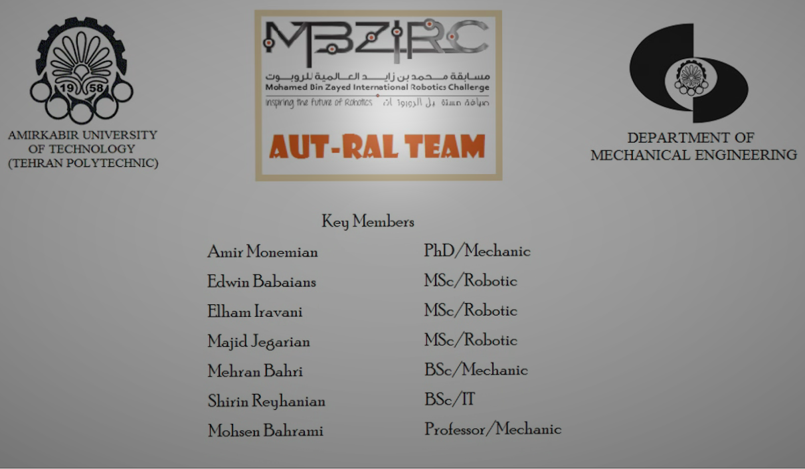

T The Mohamed Bin Zayed International Robotics Challenge (MBZIRC) is an international robotics competition, to be held every two years with total prize and team sponsorship of USD 5 Million. Robotics has the potential to have an impact that is as transformative as the internet, with robotics technology poised to fuel a broad range of next-generation products and applications in a diverse array of fields. Robotic competitions in the past few decades have been a catalyst that has accelerated the rate of technological advancements in the field of robotics and autonomous systems. MBZIRC aims to provide an ambitious, science-based, and technologically demanding set of challenges in Robotics, open to a large number of international teams. It is intended to demonstrate the current state of the art in robotics in terms of scientific and technological accomplishments, and to inspire the future of robotics. Similar to other major competitions, the MBZIRC aims to provide an environment that harbours innovation and technical excellence, while encouraging spectacular performance with robotics technologies.
ROS to Unity3D, A novel approch to presenting robotics projects
MBZIRC 2017 was consist of three challenges and a triathlon type Grand Challenge: 1. Challenge 1 requires UAV to locate, track and land on a moving vehicle, and will involve the following tasks: Locate moving vehicle Navigate to track the vehicle Land at target location on the moving vehicle 2. Challenge 2 requires an UGV to locate and reach a panel, and physically operate a valve stem on the panel, and will involve the following tasks: Locate panel and navigate to approach the panel Identify and locate a valve stem on one panel, and approach the valve stem Analyze the valve stem and select the appropriate tool to close the valve stem from a set of provided tools. Use the manipulator attached to the UGV to pick up the tool and operate the valve stem 3. Challenge 3 requires a team of UAVs to collaborate to search, locate, track, pick and place a set of static and moving objects. 4. The Grand Challenge requires a team of robots (UAVs and UGVs) to compete in an event that combines Challenges 1, 2 and 3 simultaneously..
My responsibilities in project:
- Interfacing ROS to Unity3d
- Solutions for solving challenge problems
- Rigging models from Solidwork to Unity3d
- Creating challenge proposal real-time simulations
AUT-RAL TeamUSD 5 MILLION PRIZE INTERNATIONAL ROBOTICS CHALLENGE…
For more information please visit the MBZIRC webpages :
https://www.mbzirc.comIntroduction (AUT-RAL Team)
The Challenge 1
The Challenge 2
The Challenge 3
<